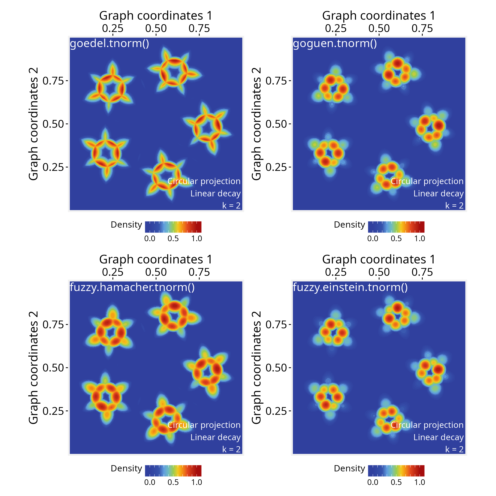
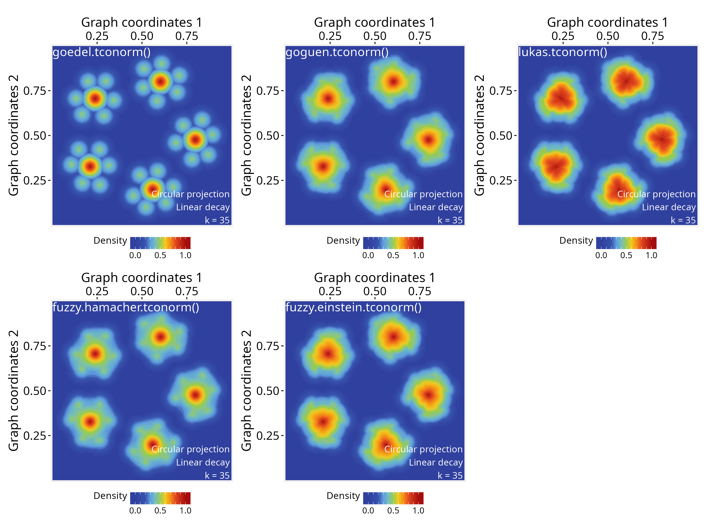

Creating signal aggregation rules
Sysbiolab Team
2026-05-16
signal-aggregation-rules.RmdPackage: PathwaySpace 1.2.1
Overview
When aggregating multiple signals over a space, such as PathwaySpace projections, it’s often not enough to simply add or average their values, given that each signal carries uncertainty or partial information.
For practical implementation with PathwaySpace projections,
any unary aggregation function of the form
function(x) { ... } can be plugged into
the pipeline, which has essentially two steps: (i) map raw signal
intensities to a decay function, such as linear, exponential, or
sigmoidal, depending on the data (see modeling signal decay);
and (ii) use an appropriate operation to produce a combined projection.
The decay function models the signal propagation, each vertex emitting a
projection that decreases with distance, reflecting both the local
strength of the signal and its spatial influence. Because a graph may
have multiple vertices, the resulting projections can be aggregated in
different ways (see Figure
1 for a conceptual overview of signal processing in
PathwaySpace).
In what follows, this tutorial demonstrates how to create different signal aggregation functions for PathwaySpace projections. A toy graph with five small islands is used to illustrate aggregation rules that emphasize distinct patterns in the data. The final section suggests a list of fuzzy logic operators that can be used to aggregate signals in PathwaySpace, including the trade-offs of each approach.
Required packages
# Check required packages for this vignette
if (!require("remotes", quietly = TRUE)){
install.packages("remotes")
}
if (!require("RGraphSpace", quietly = TRUE)){
remotes::install_github("sysbiolab/RGraphSpace")
}
if (!require("PathwaySpace", quietly = TRUE)){
remotes::install_github("sysbiolab/PathwaySpace")
}
# Check versions
if (packageVersion("RGraphSpace") < "1.2.0"){
message("Need to update 'RGraphSpace' for this vignette")
remotes::install_github("sysbiolab/RGraphSpace")
}
if (packageVersion("PathwaySpace") < "1.2.0"){
message("Need to update 'PathwaySpace' for this vignette")
remotes::install_github("sysbiolab/PathwaySpace")
}
# Load packages
library(igraph)
library(ggplot2)
library(RGraphSpace)
library(PathwaySpace)
library(patchwork)Setting basic input data
# Create a simple graph with five islands
g <- rep(igraph::make_star(7, "undirected"), 5)
V(g)$name <- paste0("n",1:vcount(g))
set.seed(123) # for reproducible 'layout_with_fr'
gs <- GraphSpace(g, layout = layout_with_fr(g))
gs <- normalizeGraphSpace(gs)
plotGraphSpace(gs, add.labels = TRUE)
# Build a PathwaySpace object
ps <- buildPathwaySpace(gs)Assigning a decay model
Next, we will assign a linear decay model for all vertices (for additional details, see the modeling signal decay tutorial).
# Get distance to the nearest vertex
near_df <- getNearestNode(ps)
pdist <- mean(near_df$dist)
# 'pdist' set as the average center-to-center distance between vertices
pdist## [1] 0.09879871
# Setting a linear decay model for all vertices
vertexDecay(ps) <- linearDecay(pdist = pdist)As a default behavior, the buildPathwaySpace()
constructor initializes each vertex’s signal with 0 (for
more details, see the signal types
section). We will update this signal, setting peak values at the central
vertices or hubs.
# Find hubs
hubs <- degree(ps@graph)
hubs <- hubs[hubs>1]
# Add signal
vertexSignal(ps) <- 1
vertexSignal(ps)[names(hubs)] <- 2
# Vertex count
gs_vcount(ps)## [1] 35Creating aggregation rules
Means, max, and min
Now we project the signals using the
circularProjection() function, in which the
aggregate.fun argument defines the aggregation rule. This
argument accepts any user-defined unary aggregation function that
aggregates a vector of numeric values into a single scalar output.
In the examples below, we compare two approaches: a standard arithmetic mean, where all values contribute equally, and a self-weighted (contraharmonic) mean, where each value is weighted by its own magnitude.
# Signal aggregation by 'mean'
ps <- circularProjection(ps, k = gs_vcount(ps), aggregate.fun = mean)
p1 <- plotPathwaySpace(ps, theme = "th3", title = "mean()")
# Signal aggregation by a 'self-weighted mean'
# (generalized contraharmonic to -/+ values)
wmean <- function(x){ weighted.mean(x, abs(x)) }
ps <- circularProjection(ps, k = gs_vcount(ps), aggregate.fun = wmean)
p2 <- plotPathwaySpace(ps, theme = "th3", title = "wmean()")
p1 + p2
These examples show how changes in weighting (from equal weights to self-weights) affects the combined projection: The standard arithmetic mean may be used when we want to emphasize the influence of local groups, while the self-weighted mean will shift the mean toward the more dominant signals.
Next, we assign new aggregation functions to explore different rules.
The max function also emphasizes the dominant signals while
the min function will highlight the regions where
projections intersect between neighbor vertices.
# Signal aggregation by 'max'
ps <- circularProjection(ps, k = gs_vcount(ps), aggregate.fun = max)
p1 <- plotPathwaySpace(ps, theme = "th3", title = "max()")
# Signal aggregation by 'min'
ps <- circularProjection(ps, k = 2, aggregate.fun = min)
p2 <- plotPathwaySpace(ps, theme = "th3", title = "min()")
p1 + p2
Note that the k parameter affects the aggregations, as
it determines how many projected signals are considered at each point in
space. In general, we recommend using k = gs_vcount(ps) to
capture contributions from all vertices, except in special cases, such
as the example above using the min function, where the
aggregation aims to highlight minimal values between two neighbor
vertices.
Fuzzy unions and intersections
This section lists fuzzy logic functions that can be used to aggregate signals in PathwaySpace, mostly available from the lfl package (Burda and Štěpnička 2021). A fuzzy intersection measures how strongly all signals agree at a given point, typically using a t-norm like minimum or product. A fuzzy union, in contrast, measures how strong any of the signals are at a given point, using a t-conorm like maximum. By combining fuzzy unions or intersections with decay functions, we can produce unified projections that integrate multiple signal sources into a single, interpretable representation.
if (!require("lfl", quietly = TRUE)){
install.packages("lfl")
}
# Load Fuzzy Logic functions
library(lfl)T-norms (Triangular Norms)
These functions represent fuzzy “AND” operations:
# Goedel t-norm: use when aggregation should be strictly limited by the weakest
# signal (logical AND, conservative intersection);
# Input range in [0, 1]
ps <- circularProjection(ps, k = 2, aggregate.fun = goedel.tnorm)
plotPathwaySpace(ps, theme = "th3")
# Goguen t-norm: use when you want smooth multiplicative attenuation of
# overlapping signals (probabilistic AND);
# Input range in [0, 1]
ps <- circularProjection(ps, k = 2, aggregate.fun = goguen.tnorm)
plotPathwaySpace(ps, theme = "th3")
# Hamacher product t-norm: use when you need smoothness in signal intersections;
# Input range in [-Inf, Inf];
fuzzy.hamacher.tnorm <- function(x) {
Reduce(function(a, b) (a * b) / (a + b - a * b), x)
}
ps <- circularProjection(ps, k = 2, aggregate.fun = fuzzy.hamacher.tnorm)
plotPathwaySpace(ps, theme = "th3")
# Einstein product t-norm: use when combining signals should preserve low values
# without collapsing to zero;
# Input range in [-Inf, Inf]
fuzzy.einstein.tnorm <- function(x) {
Reduce(function(a, b) (a * b) / (1 + (1 - a) * (1 - b)), x)
}
ps <- circularProjection(ps, k = 2, aggregate.fun = fuzzy.einstein.tnorm)
plotPathwaySpace(ps, theme = "th3")
T-conorms (Triangular Conorms)
These functions represent fuzzy “OR” operations:
# Goedel t-conorm: use when you want an extremely permissive OR, where the
# strongest signal fully dominates the aggregation;
# Input range in [0, 1]
ps <- circularProjection(ps, k = gs_vcount(ps), aggregate.fun = goedel.tconorm)
plotPathwaySpace(ps, theme = "th3")
# Goguen t-conorm: use when overlapping signals should reinforce each other in
# a probabilistic way (soft OR);
# Input range in [0, 1]
ps <- circularProjection(ps, k = gs_vcount(ps), aggregate.fun = goguen.tconorm)
plotPathwaySpace(ps, theme = "th3")
# Lukasiewicz t-conorm: use when you want signal reinforcement, saturating at 1
# once contributions accumulate;
# Input range in [0, 1]
ps <- circularProjection(ps, k = gs_vcount(ps), aggregate.fun = lukas.tconorm)
plotPathwaySpace(ps, theme = "th3")
# Hamacher sum t-conorm: use when you prefer a moderate, nonlinear signal reinforcement
# that avoids rapid saturation;
# Input range in [0, 1]
fuzzy.hamacher.tconorm <- function(x) {
stopifnot(is.numeric(x), all(x >= 0), all(x <= 1))
Reduce(function(a, b) (a + b - 2 * a * b) / (1 - a * b), x)
}
ps <- circularProjection(ps, k = gs_vcount(ps), aggregate.fun = fuzzy.hamacher.tconorm)
plotPathwaySpace(ps, theme = "th3")
# Einstein sum t-conorm: use when signal reinforcement should be smooth and symmetric,
# limiting extreme increases;
# Input range in [-Inf, Inf]
fuzzy.einstein.tconorm <- function(x) {
Reduce(function(a, b) (a + b) / (1 + a * b), x)
}
ps <- circularProjection(ps, k = gs_vcount(ps), aggregate.fun = fuzzy.einstein.tconorm)
plotPathwaySpace(ps, theme = "th3")
Note that most of the fuzzy functions listed above, including
t-norms (e.g., Goedel, Goguen, Hamacher) and t-conorms
(e.g., Goedel, Goguen, Lukasiewicz), operate within the unit interval,
accepting input values in [0, 1]. PathwaySpace
also operate on this range of values for positive signals by default
(with rescale = TRUE; see circularProjection()
function); however, negative signals are rescaled to
[-1, 0], and therefore are not directly compatible with
these fuzzy operators (for more details, see the signal types
section).
Also, when evaluating input signals in the range
(-Inf, Inf) (e.g., differential expression
values), we recommend using aggregation functions that treat negative
and positive values symmetrically. In such cases, the standard
arithmetic mean and self-weighted mean provide
compatible sign-symmetric aggregation strategies.
Session information
## R version 4.6.0 (2026-04-24)
## Platform: x86_64-pc-linux-gnu
## Running under: Ubuntu 24.04.4 LTS
##
## Matrix products: default
## BLAS: /usr/lib/x86_64-linux-gnu/openblas-pthread/libblas.so.3
## LAPACK: /usr/lib/x86_64-linux-gnu/openblas-pthread/libopenblasp-r0.3.26.so; LAPACK version 3.12.0
##
## locale:
## [1] LC_CTYPE=en_US.UTF-8 LC_NUMERIC=C
## [3] LC_TIME=en_US.UTF-8 LC_COLLATE=en_US.UTF-8
## [5] LC_MONETARY=en_US.UTF-8 LC_MESSAGES=en_US.UTF-8
## [7] LC_PAPER=en_US.UTF-8 LC_NAME=C
## [9] LC_ADDRESS=C LC_TELEPHONE=C
## [11] LC_MEASUREMENT=en_US.UTF-8 LC_IDENTIFICATION=C
##
## time zone: America/Sao_Paulo
## tzcode source: system (glibc)
##
## attached base packages:
## [1] stats graphics grDevices utils datasets methods base
##
## other attached packages:
## [1] patchwork_1.3.2 igraph_2.3.1 PathwaySpace_1.2.1 RGraphSpace_1.2.3
## [5] ggplot2_4.0.3 remotes_2.5.0
##
## loaded via a namespace (and not attached):
## [1] sass_0.4.10 generics_0.1.4 tidyr_1.3.2 digest_0.6.39
## [5] magrittr_2.0.5 evaluate_1.0.5 grid_4.6.0 RColorBrewer_1.1-3
## [9] fastmap_1.2.0 jsonlite_2.0.0 ggrepel_0.9.8 ggrastr_1.0.2
## [13] purrr_1.2.2 scales_1.4.0 textshaping_1.0.5 jquerylib_0.1.4
## [17] cli_3.6.6 rlang_1.2.0 tidygraph_1.3.1 withr_3.0.2
## [21] RANN_2.6.2 cachem_1.1.0 yaml_2.3.12 otel_0.2.0
## [25] ggbeeswarm_0.7.3 tools_4.6.0 dplyr_1.2.1 colorspace_2.1-2
## [29] vctrs_0.7.3 R6_2.6.1 lifecycle_1.0.5 fs_2.1.0
## [33] htmlwidgets_1.6.4 vipor_0.4.7 ragg_1.5.2 pkgconfig_2.0.3
## [37] beeswarm_0.4.0 desc_1.4.3 pkgdown_2.2.0 pillar_1.11.1
## [41] bslib_0.10.0 gtable_0.3.6 Rcpp_1.1.1-1.1 glue_1.8.1
## [45] systemfonts_1.3.2 xfun_0.57 tibble_3.3.1 tidyselect_1.2.1
## [49] rstudioapi_0.18.0 knitr_1.51 farver_2.1.2 htmltools_0.5.9
## [53] rmarkdown_2.31 compiler_4.6.0 S7_0.2.2